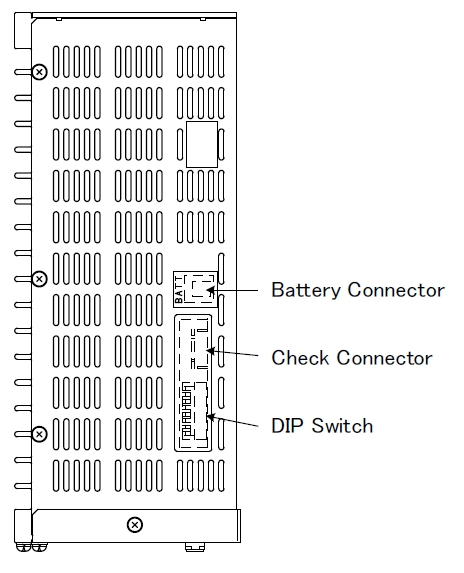
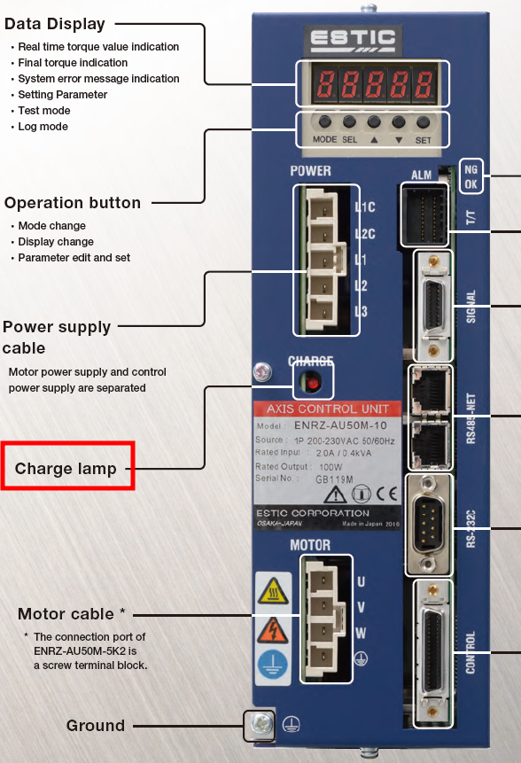
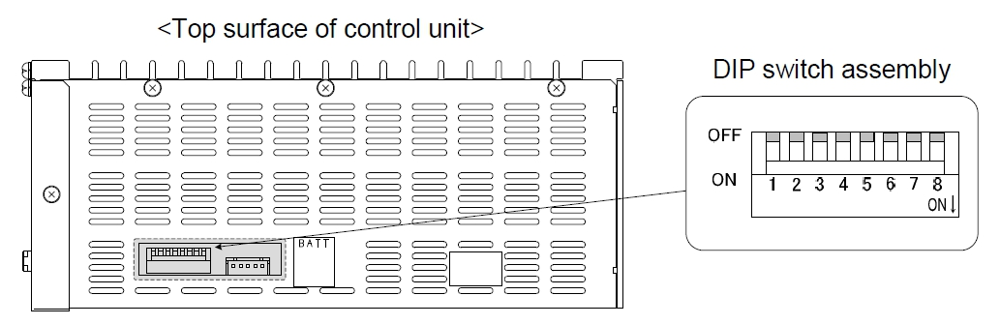
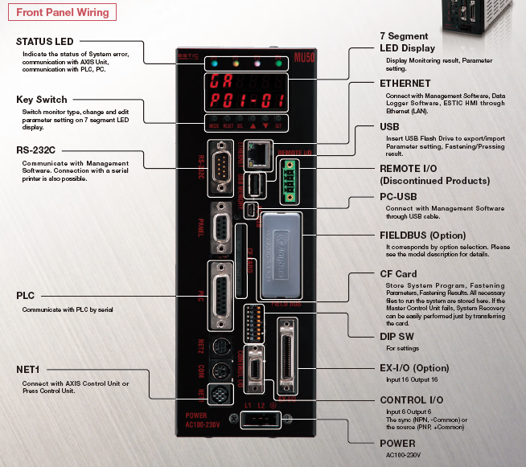

INSTALLATION GUIDE
Z50 고정식 너트러너 설치 가이드
AU50M (드라이버) · MU50 (통신모듈)
01
ENRZ-AU50M 드라이버 설치 주의사항
DIP 스위치 설정

| SW | 기능 | 설정 | 공장 출하 |
|---|---|---|---|
| 1 | MAS/LOC 국 전환 다축 시스템 사용 시 설정 |
단독 사용 시 ON (MAS 국) | OFF (LOC 국) |
| 2 | 설정값 보호 기능 | ON 시 MU50 패널에서 주요 설정 및 초기화 실행 불가 | OFF (무효) |
| 3 | 핫스와핑 기능 | ON 시 유효 (펌웨어 Ver.AA1400 이상) | OFF (무효) |
| 9 | 모터센서 사양 전환 레졸버 / 엔코더 선택 |
ON 레졸버 · OFF 엔코더 설정 오류 시 시스템 에러 발생 |
ON (레졸버) |
배선 및 연결
접지: 감전 방지를 위해 보호 접지 단자를 제어반의 보호 접지와 반드시 연결. 권장: 제3종 접지 (100Ω 이하)
- 제어 전원: 단상 AC200~230V ±10% (50/60Hz)를 L1C, L2C 단자에 연결. 제어전원·동력전원은 동일한 전원소스에서 공급 가능.
- 동력 전원:
AU50M-10: L1, L2 (단상)
AU50M-20, 40, 2K, 5K2: L1, L2, L3 (삼상)
제어 전원과 주 전원은 별도 운용 가능. 주 전원은 제어 전원과 동시 또는 그 이후에 입력.
확인: 반드시 CHARGE 부에 빨강색 점등 확인

- 팬 구동용 전원 (AU50M-2K 전용): 과열 방지를 위해 DC24V 5W 팬 구동용 전원 커넥터 연결 필수.
- NET 케이블 (RS485-NET): 다축 제어 시 AXIS 컨트롤 유닛 간 연결. 미연결 커넥터에는 반드시 종단저항(ENRZ-CVST3) 장착.
- 케이블 배치 / 노이즈 대책: 너트러너 케이블은 가능한 짧게. 토크 트랜스듀서·레졸버 케이블은 모터 케이블과 별도 배선 (30cm 이상 이격 또는 금속 벽 삽입) 권장. 중계 케이블은 1개 이상 사용 금지.
- 백업 배터리: 시스템 달력(날짜/시간)용 옵션 배터리(ENRZ-BATT) 장착. 2년마다 교체 권장.
AU50 / AU50M (AU 마스터) 패널 툴 모델 변경 순서
전면 패널 키 조작으로 연결 툴 유닛의 모델 코드를 변경 (총 8단계)
시스템 설정 기능 "SYS"
- 프로그램 선택과 무관하게 시스템 전체에 고정 적용되는 시스템 데이터 설정
- 내용을 확인하지 않고 변경하면 파라미터 손실 및 오동작 우려
- 사용 시점: 최초 시스템 기동 · 불량 부품 교환 · 시스템 사양 변경 시에만
중요 · MODEL TYPE 변경 시 AU50 동작
- 체결 프로그램 초기화: 모든 체결 프로그램이 미작성 상태가 되고, 체결 결과 이력이 삭제됩니다.
- 시스템 체크 판정 기준: 시스템 체크 시 툴 유닛과 AU50의 일치 여부를 이 설정값 기준으로 판정합니다. 설정과 다른 툴이 연결되면 시스템 에러가 발생합니다.
- 프로그램 재업로드 필요: 초기화 후 기동 시 ERR.7이 발생하므로, PC50 매니지먼트 소프트웨어로 체결 프로그램을 다시 업로드해야 합니다.
-
01
설정 메뉴 진입
패널 전면의 MODE 키를 약 1초간 길게 누릅니다.
-
02
시스템 설정 메뉴(SYS) 선택
MODE 키를 짧게 여러 번 눌러 화면에 SYS가 표시되면 SET 키를 누릅니다.
-
03
모델 선택 파라미터(A0001) 이동
화면에 A0001 (MODEL TYPE)이 표시되면 SET 키를 눌러 설정 데이터 화면으로 들어갑니다.
-
04
툴 모델 코드 변경
▲ ▼ 키와 SEL 키(자리 이동)로 연결된 툴 유닛의 모델 코드를 선택합니다. (코드는 하단 표 참조)
-
05
설정 저장 및 확정
올바른 모델 코드가 선택되었으면 SET 키를 눌러 변경 데이터를 저장합니다.
-
06
초기 화면 복귀
MODE 키를 약 1초간 길게 눌러 초기 화면으로 돌아옵니다.
-
07
시스템 에러 해제 (리셋)
초기 화면에서 SET 키를 누르면 모델 변경으로 발생한 시스템 에러가 해제(리셋)됩니다.
-
08
수동 시스템 체크(SY CK) 실행
아래 순서로 매뉴얼 시스템 체크를 실행하고, 화면에 Good이 표시되는지 확인합니다.
MODE1초→ SY CK선택→ SET→ Good
A0001 : MODEL TYPE 설정 코드
연결할 시스템 모델을 선택하는 파라미터. 실제 연결된 툴 유닛과 반드시 일치시킬 것.
| Setting | Model |
|---|---|
| 0r5 | ENRZ-TU0R5R기본값 |
| 001 | ENRZ-TU001R |
| 003 | ENRZ-TU003R |
| 004 | ENRZ-TU004R |
| 008 | ENRZ-TU008R |
| 013 | ENRZ-TU013R |
| 020 | ENRZ-TU020R |
| 040 | ENRZ-TU040R |
| 060 | ENRZ-TU060R |
| 080 | ENRZ-TU080R |
| 150 | ENRZ-TU150R |
| C002 | ENRZ-TC002R |
| C004 | ENRZ-TC004R |
| 050 | ENRZ-TU050R |
| 120 | ENRZ-TU120R |
| 300 | ENRZ-TU300R |
02
마스터 제어 유닛 (ENRZ-MU50) 설치 주의사항
DIP 스위치 설정

| SW | 기능 | 설정 | 공장 출하 |
|---|---|---|---|
| 1 | CC-Link 리셋 설정 | 상세 아래 참조 | OFF |
| 2 | FROM 설정값 우선 CF카드보다 우선 |
— | OFF |
| 4 | AU 각 축 체결 결과 NG 출력 | ON 시 작동하지 않거나 축 절단된 축의 체결 완료 및 NG 출력 무효화 (Ver.MA1240 이상) | OFF (유효) |
| 6 | FIELDBUS 1BYTE 출력 워드 디바이스 출력 배열 방식 선택 |
필드버스 출력 데이터가 깨질 때 ON으로 시도 | OFF (무효) |
| 8 | 설정 보호기능 | ON 시 MU50 패널에서 주요 설정 및 초기화 실행 불가. PC50/DP50을 통한 설정 변경은 보호되지 않음 (Ver.MA1380 이상) | — |
SW1 · CC-Link 리셋 상세
- 대상 장비
- AnyBus-CC CC-Link 유닛 장착 MU50 ENRZ-MU50-Cxx
- 발생 조건
- MU50 전원 ON 후 10초 이상 지연되어 CC-Link 마스터국 전원이 ON되는 경우
- 발생 현상
- CC-Link 통신이 정상적으로 이루어지지 않을 수 있음
- 대응 기능
- SW1이 ON인 경우, 정상 통신이 1초간 이루어지지 않으면 CC-Link 유닛을 리셋
- 사용 목적
- CC-Link 유닛 리셋을 통한 통신 재접속
- 지원 버전
- 시스템 소프트웨어 MA1190 이후
- 기본 설정
- OFF / 기능 무효
주의: 딥스위치 조작은 반드시 컨트롤러 전원을 끈 상태에서 실시
배선 및 연결

- 접지: MU50은 반드시 접지해야 함.
- 전원 공급: AC100~230V ±10% (50/60Hz)를 POWER 커넥터에 연결.
- CONTROL I/O 커넥터: 외부 제어 기기와 연결 (싱크/소스 방식 모두 지원).
- NET1 커넥터: MU50과 AU50/SPU50 간 연결.
- FIELDBUS 포트 (있을 경우): 필드버스 유형(DeviceNet, CC-Link 등)에 따라 노드 주소 및 통신 속도 설정 필수.
- CF 카드: 메인 메모리 역할. 지정된 CF 카드만 사용. 파일 쓰기 중 전원 차단 시 고장(CF 카드 이상) 주의.
- USB 메모리 포트: 외부 저장 장치 연결. FAT32, USB 2.0 / TYPE-A 호환.
- RS-232C (SERIAL 포트): PC 또는 프린터 연결 (당사 순정품 또는 실드 처리된 크로스 케이블 사용, 매뉴얼 참조). RS-422와 동시 사용 불가.
- ETHERNET 포트: PC(PC50) 연결. CAT.5E 등급 이상 LAN 케이블 및 FA용 스위칭 허브 권장. RJ45 표준 커넥터.
- 케이블 및 노이즈 대책: 통신선은 짧게 유지. 다른 동력선이나 에어 호스와 별도 계통으로 배선하거나 차폐판을 설치하여 노이즈로 인한 시스템 에러 방지.
03
부스트 기능

- 사용법: 신규 설정치 작성만으로는 설정 불가. 컨트롤러에서 설정치를 한 번 다운로드 받은 후 MP(AP)0247 고속 회전속도 부스트기능 설정 가능. MP(AP)0223 고속 회전속도 오른쪽 ( ) 안의 숫자가 부스트 사용 시 rpm.
- 배속 원리: AP247 (HI SPEED BOOST)을 '유효'로 하면 고속 회전 시 설정 속도(AP223)의 1.4배 속도로 동작.
설정 금지 모델: ENRZ-TU060R 및 ENRZ-TU080R의 폴딩(벤트) 타입 모델에는 'HI SPEED BOOST'를 설정해서는 안 됩니다.
위험 경고: 고속 회전(High Speed) 중 체결이 이루어지면 큰 오버슈트가 발생하거나 툴 유닛 및 워크가 파손될 위험이 있으므로 설정 시 주의가 필요합니다.
부스트 모드 시 최고 회전수 (RPM)
| 툴 유닛 모델명 | 표준 최고 회전수 (rpm) | 부스트 모드 (rpm) |
|---|---|---|
| ENRZ-TU0R5R-S | 2814 | 3940 |
| ENRZ-TU001R-* | 1224 | 1714 |
| ENRZ-TU003R-* | 468 | 656 |
| ENRZ-TU004R-S | 1464 | 2050 |
| ENRZ-TU008R-* | 714 | 1000 |
| ENRZ-TU013R-* | 500 | 700 |
| ENRZ-TU020R-* | 291 | 408 |
| ENRZ-TU040R-* | 148 | 208 |
| ENRZ-TU060R-S | 113 | 159 |
| ENRZ-TU080R-S | 83 | 117 |
* 표시는 해당 모델의 모든 하위타입을 포함합니다.